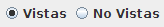
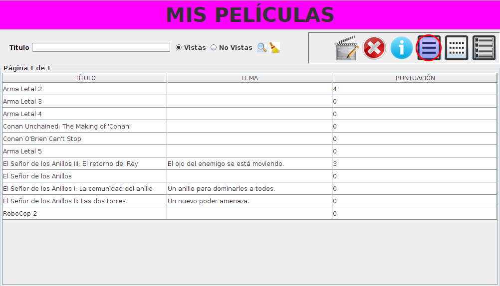
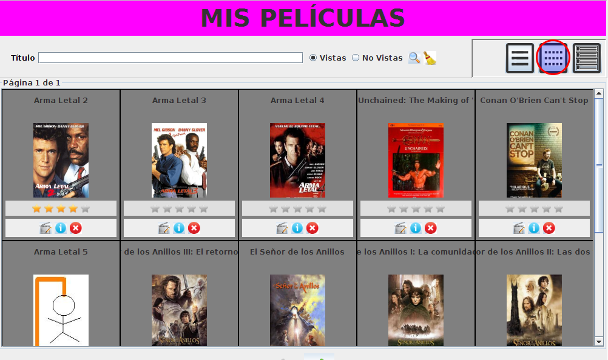
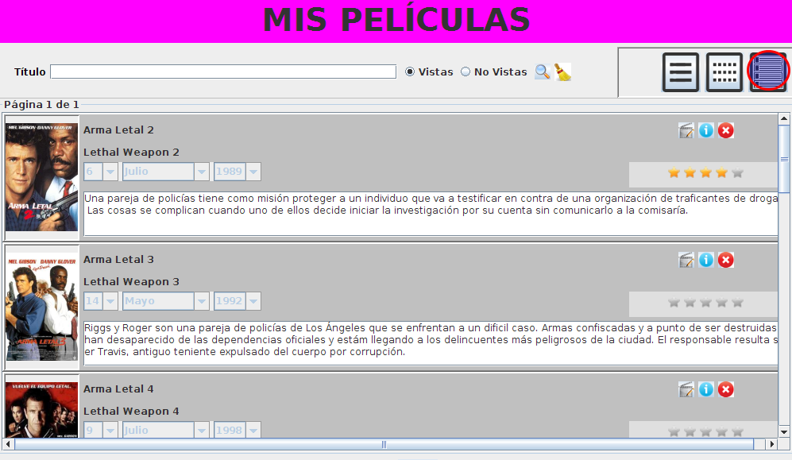
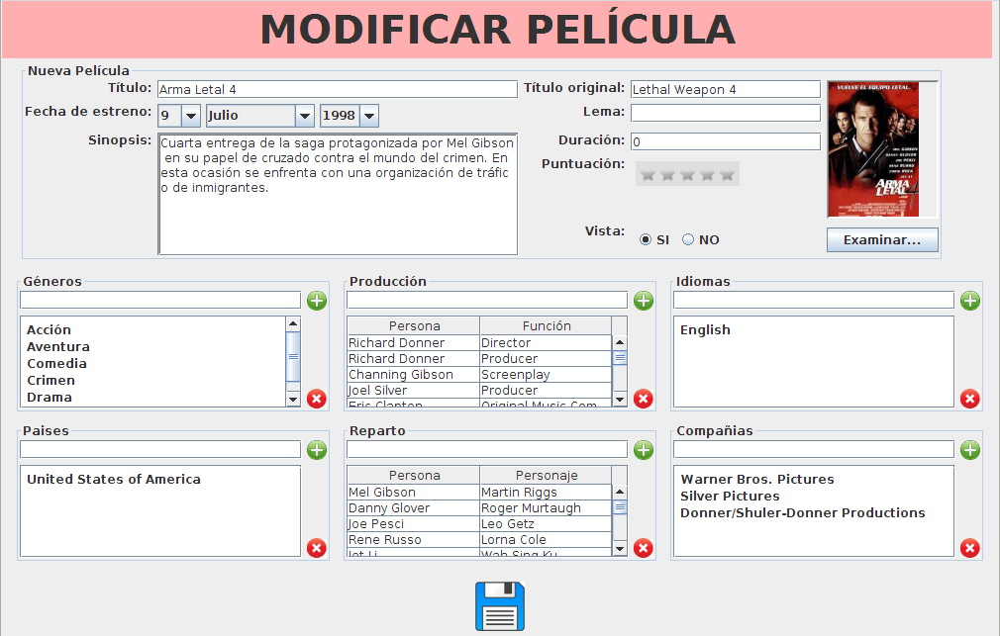
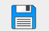

Para ver el listado de películas de nuestra base de datos, pulse el icono de "mis películas"
En esta pantalla se mostrará todas las películas vistas de la base de datos. Puede filtrar por vistas o no vistas pulsando en estas opciones 
Una vez posicionado en el filtro deseado, podrá realizar la búsqueda simplemente escribiendo en el cuadro de texto, mostránnose los resultados según vaya escribiendo. Una vez obtenido los resultados, podrá visualizar los resultados en modo vista, mosaico o detallado.
En cualquiera de las siguientes vistas, podrá pulsar el icono de információn para ver detalle de la película seleccionada.
Lista

Mosaico

Detallado

Podrá pulsar el icono de editar en cualquiera de las vistas para modificar los datos de la película. A continuación, se mostrará la ventana de modificación con los datos de la película seleccionada en la cual podrá realizar los cambios deseados.

Para añadir datos en las tablas escriba en el cuadro de texto y pulse enter o el botón añadir para agregarlo en la tabla y para eliminar un registro de la tabla seleccionelo y pulse el botón de eliminar
Pulse el botón de guardar cuando haya terminado la edición para guardar los cambios. 
Para eliminar una película de nuestra base de datos, pulse el botón de eliminar en cualquiera de las vistas, seguidamente la aplicación le pedirá confirmación de la operación.